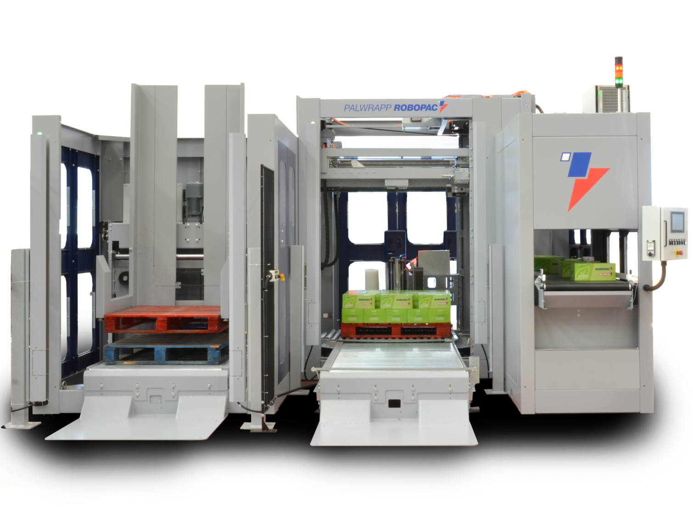

50
CYKLI / MIN
Maksymalna wydajność układania — do ok. 3 warstw na minutę, w zależności od formatu i konfiguracji.
ROBOPAC PALWRAPP
Palwrapp automatyzuje układanie produktów na palecie, nawet gdy masz ograniczoną przestrzeń produkcyjną. Wyższa wydajność, większa elastyczność, mniej pracy ręcznej.

50
CYKLI / MIN
Maksymalna wydajność układania — do ok. 3 warstw na minutę, w zależności od formatu i konfiguracji.
2200 mm
MAKS. WYSOKOŚĆ PALETY
Obsługa różnych formatów produktów i wysokości stosu palety.
MULTI FORMAT
WIELE TYPÓW PRODUKTÓW
Obsługa różnych typów opakowań i formatów palet — od standardowych EPAL po niestandardowe wymiary.
PLUG & PLAY
SZYBKA INTEGRACJA
Maszyna projektowana pod szybkie uruchomienie — podłączenie, konfiguracja i start produkcji.
1 O produkcie
Palwrapp należy do grupy kompaktowych, modułowych paletyzatorów — maszyn zaprojektowanych tak, by zmieścić się w istniejącej linii produkcyjnej bez konieczności budowy dedykowanej hali czy rozbudowy infrastruktury.
Wszystkie warianty opierają się na wspólnych modułach funkcjonalnych i systemach ramowych, co ułatwia konfigurację, serwisowanie i późniejsze rozbudowy. Maszyna jest szczególnie dobrze dopasowana do produktów o płaskim spodzie — kartonów, tac, pojemników i opakowań typowych dla przemysłu spożywczego.
W odróżnieniu od dużych, stacjonarnych paletyzatorów portalowych, Palwrapp łączy niewielki ślad instalacyjny z pełną automatyzacją procesu układania warstw, w tym opcjonalnym owijaniem stretch i wstawianiem przekładek.
2 Zastosowania
Palwrapp adresuje potrzeby zakładów, w których produkcja opiera się na opakowaniach o płaskim spodzie i wymaga regularnej, powtarzalnej paletyzacji bez angażowania dużej liczby operatorów.
Paletyzacja kartonów i opakowań o płaskim spodzie tuż za linią produkcyjną.
Automatyczne układanie multipacków i kartonów po zgrzewarce lub rozlewni.
Produkcja wielu SKU z częstą zmianą formatu — szybka zmiana receptury warstw.
Retrofit linii i nowe obiekty z ograniczonym metrażem hali produkcyjnej.
do 50 cykli/min
Maksymalna wydajność układania produktów — do ok. 3 warstw na minutę, w zależności od formatu i konfiguracji.
2200 mm
Maks. wysokość palety (w zależności od modelu i wariantu wysokości).
600 × 400 mm
Maks. format produktu (Palwrapp 3 Inline — min. 150 × 100 mm).
800 × 1200 mm
Format palety — również 1000 × 1200 mm w wybranych konfiguracjach.
Mała powierzchnia. Duże możliwości.
Zintegrowany system owijania folią stretch — paleta może być zabezpieczona bezpośrednio po zakończeniu układania warstw.
Zobacz wszystkie korzyści →3 Korzyści
Co poszczególne cechy Palwrapp oznaczają w codziennym użytkowaniu — realne konsekwencje dla zakładu, nie hasła marketingowe.
Ślad instalacyjny Palwrapp jest znacznie mniejszy niż u tradycyjnych paletyzatorów wysokiego regału. Maszyna może stanowić naturalne przedłużenie linii produkcyjnej.
Modułowa konstrukcja pozwala dobrać podajnik, sposób podawania produktu i wariant wysokości palety do konkretnego procesu.
Maszyna jest projektowana z myślą o szybkim uruchomieniu: podłączenie zasilania, skonfigurowanie parametrów i start produkcji.
System przechowuje receptury warstw — wybór formatu to kwestia kilku dotknięć na panelu dotykowym, bez przebudowy mechaniki.
Precyzyjne układanie warstw maksymalizuje objętość palety — stabilny stos, mniej uszkodzeń transportowych i lepsze wykorzystanie magazynu.
Ślad instalacyjny Palwrapp jest znacznie mniejszy niż u tradycyjnych paletyzatorów wysokiego regału. Maszyna może stanowić naturalne przedłużenie linii produkcyjnej — np. tuż za zgrzewarką lub etykietarką — bez konieczności wydzielania osobnej strefy paletyzacji.
Modułowa konstrukcja pozwala dobrać podajnik, sposób podawania produktu i wariant wysokości palety do konkretnego procesu. Ta sama platforma sprzętowa obsługuje różne formaty opakowań — wystarczy zmiana programu na panelu operatorskim, bez przebudowy mechaniki.
Maszyna jest projektowana z myślą o szybkim uruchomieniu: podłączenie zasilania, skonfigurowanie kilku parametrów i start produkcji. Interfejs operatorski nie wymaga specjalistycznej wiedzy automatyki — zmiana formatu czy receptury warstwy odbywa się z poziomu ekranu dotykowego.
Przy produkcji wielu SKU na jednej linii operator nie musi ręcznie przekładać prowadnic ani przeprogramowywać sterownika PLC. System przechowuje receptury warstw — wybór formatu to kwestia kilku dotknięć, co skraca czas przezbrojenia między seriami.
Technologia Cube polega na precyzyjnym układaniu produktów w warstwach tak, by maksymalnie wykorzystać objętość palety — tworząc stabilny, „kubiczny" stos. W praktyce oznacza to mniej uszkodzeń transportowych, lepsze wykorzystanie przestrzeni magazynowej i kontenera oraz mniejsze zużycie folii stretch dzięki równym, prostokątnym ścianom palety.
4 Modele
Palwrapp dostępny jest w wersji w pełni automatycznej (z podajnikiem produktów) oraz półautomatycznej (operator podaje produkty ręcznie).
do 50 cykli/min · do 3 warstw/min
Inline — produkty podawane w linii prostej, automatyczne, ciągłe z linii produkcyjnej.
do 40 cykli/min · do 2,5 warstwy/min
Kompaktowa konfiguracja dwurzędowa — automatyczne podawanie z taśmociągu lub stołu zgrzewającego.
do 35 cykli/min · do 2 warstw/min
Metoda sweep — produkty zbierane i przesuwane na paletę, automatyczne układanie warstw.
do 25 cykli/min · do 1,5 warstwy/min
Sweep Infeed — ręczne podawanie w strefie infeed, automatyczne układanie warstw przez maszynę.
5 Wyposażenie
Elektronika najwyższej klasy — sterownik PLC z ekranem dotykowym zapewnia stabilną pracę i łatwy dostęp do parametrów. Mniej nieplanowanych postojów i możliwość samodzielnej diagnostyki alarmów.
Napędy serwo kontrolują ruch osi układających z wysoką precyzją. Każda warstwa jest identyczna — kluczowe przy produktach wymagających stabilnego stosu.
Bezpieczeństwo kat. 3 PL(d) — osłony i systemy bezpieczeństwa wg EN ISO 13849-1. Operator pracuje w bliskości maszyny bez narażenia na kontakt z elementami ruchomymi.
Prosty interfejs operatorski — intuicyjny panel dotykowy: zmiana formatu, podgląd licznika warstw i historia alarmów bez szkolenia z automatyki przemysłowej.
Moduły rozszerzające możliwości standardowej konfiguracji — warto rozważyć je już na etapie planowania linii.
Automatyczne pobieranie pustych palet ze stosu — eliminuje ręczne odkładanie przez operatora.
Wstawianie kartonowych lub plastikowych przekładek między warstwami — stabilizacja stosu i ochrona opakowań.
Owijanie folią bezpośrednio po układaniu — bez transportu do osobnego stanowiska.
Zdalny podgląd parametrów, diagnostyka i aktualizacja oprogramowania — krótszy czas reakcji serwisu.
Konfiguracja wysokości roboczej dostosowana do przestrzeni hali — bez zmiany logiki układania.
Wzmocniona rama i napędy do ciężkich produktów — np. zgrzewki multipacków z napojami.
Zobacz Palwrapp w akcji — prezentacja maszyny w konfiguracji produkcyjnej.
6 FAQ
Krótkie odpowiedzi na pytania, które najczęściej pojawiają się przy doborze i wdrożeniu Palwrapp.
Palwrapp to kompaktowy, modułowy paletyzator — zajmuje wyraźnie mniej miejsca niż stacjonarne maszyny portalowe. Można go ustawić jako przedłużenie istniejącej linii, bez budowy osobnej strefy paletyzacji.
Najlepiej sprawdza się przy opakowaniach o płaskim spodzie — kartonach, tacach i pojemnikach. Format palety to zwykle 800 × 1200 mm lub 1000 × 1200 mm, a wymiary produktu zależą od wybranego modelu (od ok. 100 × 80 mm do 600 × 400 mm).
W zależności od modelu i konfiguracji — do ok. 50 cykli na minutę i do ok. 3 warstw na minutę. Wersja półautomatyczna pracuje wolniej (do ok. 25 cykli/min), bo operator podaje produkty w strefie infeed.
Tak. Wersja automatyczna (m.in. Palwrapp 3 Inline, 2 Inline, 2 Sweep) pobiera produkty z linii. Wersja półautomatyczna (Sweep Infeed) wymaga ręcznego układania produktów w strefie infeed, a układanie warstw wykonuje maszyna.
Najczęściej: destacker pustych palet, przekładki międzywarstwowe, zintegrowaną owijarkę stretch, zdalne wsparcie R-Connect, warianty wysokości palety oraz wzmocnienie do warstw o wadze do 350 kg.
Wystarczy napisać, co pakujesz, jaki format opakowań stosujesz i jaką wydajność planujesz — wrócimy z propozycją modelu Palwrapp i układu linii. Kontakt: Spolex Sp. z o.o., tel. 22 351 71 91, biuro@spolex.com.
7 Kontakt
Napisz, co pakujesz, jaki format opakowań stosujesz i jaką wydajność planujesz — wrócimy z propozycją konfiguracji Palwrapp i układu linii paletyzacji.
Bezpośredni kontakt
Spolex Sp. z o.o.
ul. Rzemieślnicza 13
05-082 Blizne Łaszczyńskiego, Polska